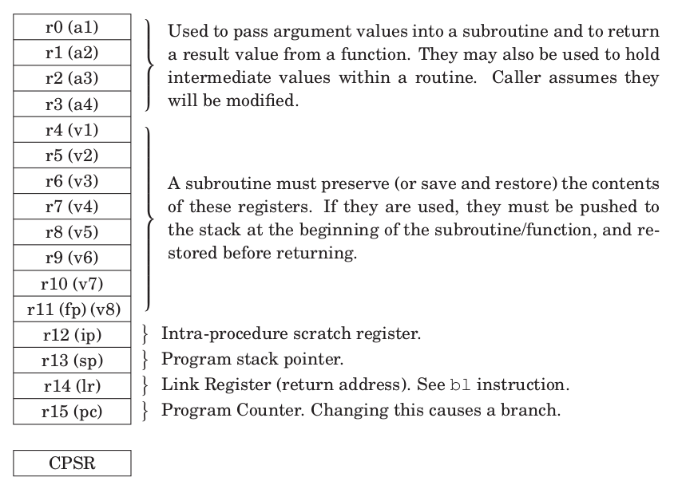

ABI: Application Binary Interface
The ABI is the standard way to communicate assembly code with higher level languages like C, and dictates how the latter will be compiled into binary.
A practical example is provided in this repo.
Register usage
To be able to call a C function from assembly and vice versa, the registers must follow the convention showed on the following image, and described in the ARM ABI page.
r0-r3: Arguments of the function (up to four). r0 may be used as return vale. The user must always assume that these values were changed after the function call, and may be freely used inside the function (Caller saved registers).r4-r11: Local variables. Inside the function, this values should be stored and retrieved, leaving them unmodified. (Function saved registers).r12 (ip): Intra-procedure scratch register. If the branch instruction is too far away (more than 32 MBytes in memory), the assembler will create a veneer, an intermediate space in memory to jump to reach that place, whose address will be stored in R12. The value of "r12" could be overwritten after every "branch" instruction (scratch register), and is the responsibility of the caller to preserve it's value. (Caller saved register).r13 (sp): The stack pointer should not be modified inside a function execution. (Function saved).r14(lr): The immediate instruction after the function call is saved in this register; therefore, the link register should be loaded into the program counter at the end of the function's execution to return from it. If another function were to be called inside it, the value of the lr would be overwritten. Because of that, the lr should always be stored in the stack at the beginning of the function call. (Function saved).r15(pc): The value of the lr should be loaded in the pc at the end of the function execution.

Stack alignment
Following the C ABI, the stack address should have an 8 byte alignment before entering a function.
The only registers that should be preserved are the four arguments and the scratch register {r0-r3, r12}. However, they occupy 20 bytes, breaking the "8 byte alignment of the stack". The easiest and fastest way to fix this is to store an additional "mock" register, to have an even number of 4 byte registers stored, and keeping the 8 byte alignment.
If all the registers's values want to be preserved, a standard C function call looks like this:
push {r0-r3, r4, r12} // Store modifiable registers, and mock "r4"
ldr r0, =arg1 // Load first argument
ldr r1, =arg2 // Load second argument
//[...]
bl c_function // Go to "C" function
pop {r0-r3, r4, r12} // Retrieve old registers
Calling a C function from Assembly
C code is compiled in Thumb mode by default (16-bit instructions), but it can be changed with the -marm or -mthumb compiler flags.
When calling a C function from assembly, these steps must be followed:
-
Caller saved registers. Store r0, r1, r2, r3, r12 and lr. The stack must remain with 8byte alignment.
-
Load the first four arguments in r0, r1, r2 and r3 respectively. If the argument has 8 bytes, it should be loaded into r0:r1 or r2:r3. If the argument is a struct, its components should be stored one by one as if they were individual arguments.
-
If the function has more than four arguments, the rest must be loaded on the stack. The fifth argument should be at the lowest memory address, and the last argument at the highest address (this is done by default using a register list with the
pushinstruction). No matter the variable size, the stack operation is always word sized. -
Call the function with a
bl <function_name>instruction (the link register should be updated). -
The return value will be stored in r0 if it has 4 bytes, in r0:r1 if it hast 8 bytes, or in r0:r1:r2:r3 if it has 16 bytes.
-
After execution, clear the stack by popping the same amount of registers that were pushed, or incrementing it's value according to the amount of arguments greater than four loaded in the stack.
// Assembly file
.global _start
.extern _stack_addr // Defined in the linker script
.extern add9 // defined in C file, 9 arguments.
.text
_start:
ldr sp, =_stack_addr // Initializing stack pointer
mov r0, #1 // Initializing arguments.
mov r1, #2
mov r2, #3
mov r3, #4
mov r4, #5
mov r5, #6
mov r6, #7
mov r7, #8
mov r8, #9
push {r4-r8, r12} // Pushing arguments 5 to 9 into the stack
blx add9 // r0= 1 + 2*2 + 3*3 + 4*4 + 5*5 + 6*6 + 7*7 + 8*8 + 9*9 = 285
pop {r4-r8, r12} // or use: "add sp, sp, #24"
// Function declared in C
int add9(int a, short b, char c, int d, int e, int f, unsigned int g,
unsigned char h, int i) {
return a + 2*b + 3*c + 4*d + 5*e + 6*f + 7*g + 8*h + 9*i;
}
Calling an Assembly function from C
Function prototypes and data types are a concept from the C programming language, not from assembly. Therefore, the prototype must be created using the extern keyword, and the data types must be arbitrarily chosen.
// C file
// Define the prototype from the assembly function
extern int add6_from_asm(int a, char b, char c, int d, int e, char f);
int main (void) {
add6_from_asm(3, 5, 7, 9, 11, 13); // Call the function
}
These considerations must be followed when writing the assembly function:
-
The function must be global with:
.global <function_name>. -
Remember to add the
.type <function_name>, %functiondirective, or it won't work properly. -
First four parameters are stored in registers
{r0-r3} -
Return value should be loaded in
r0. -
If the function has more than four arguments, they must be saved on the stack, buy remember that the stack pointer shouldn't be modified. Therefore, you can't use the
pop {}instruction to retrieve them. You must instead access the parameters manually. Therefore, the fifth argument is obtained withldr r1, [sp], the second withldr r1, [sp, #4], and so on. -
Remember that registers r4-r11 must be left untouched.
.text
.type add6_from_asm, %function // MANDATORY, or won't work
.global add6_from_asm
add6_from_asm:
add r0, r0, r1
add r0, r0, r2
add r0, r0, r3
ldr r1, [sp] // Access argument 5
add r0, r0, r1
ldrb r1, [sp, #4] // Access argument 6, it's a char, 1 byte
add r0, r0, r1
mov pc, lr
Using variables from Assembly in C
The variables in the assembly file must be defined with .global; while in the C file they must be declared using extern and given a type.
.data
.global var_from_asm
.global vector_from_asm
var_from_asm: .word 5
vector_from_asm: .word 0, 1, 2, 3, 4, 5
Using variables from C in Assembly
Variables in C must be defined globally.
.extern var_from_c
.text
ldr r0, =var_from_c
ldr r1, [r0] // r1 = 25
add r1, r1, #5
str r1, [r0] // var_from_c = 30
Using header files ".h" in assembler
To include a header file in asm, some special considerations must be taken care of:
- You can't use the Assembler (as) alone to compile the assembly code. You must use the C preprocessor (cpp) and later the assembler code as follows:
- You can use the C compiler (gcc), but the assembly files must end with a mayus ".S". Besides, the C header file must be included with a
#include, and only have C preproccessor directives (for example, function prototypes or C variable types are not allowed).
Note: linker variables, when accessed from C, are seen as addresses always.
For example, this definition: ld_size = 0x1000; Will be interpreted as a variable in the address 0x1000, with unknown contents.
Note: I had a weird bug trying to access the VMA from the linker script inside C. FIXED. If more than one symbol has the same value, then ALL of them will have a value of "0" from C (not from assembly).
Attribute syntax
The __attribute__(()) syntax allows to set assembly directives for the C functions and variables.
__attribute__((<option>)) target
extern int __attribute__((aligned(16))) i = 0; // This variable will be aligned to a multiple of 16.
int __attribute__((section(".text"))) foo (void); // This function will be written to the ".text" section.
The complete list of attributes can be view from the GCC manual.
Inline Assembly in C
Inline assembly allows to access the registers directly, or do some hardware specific instruction like changing operating mode with cps, or putting the processor in idle state with wfi. Only one line of assembly can be written at a time, and "" must be used.
It's not possible to access a local variable from a function using inline assembly, but it's possible to access a global variable. That's because local variables are stored in registers or the stack, and do not have a fixed memory address (therefore "=a" is not a valid address). Meanwhile, global variables are fixed, and it's location is known at compile time.